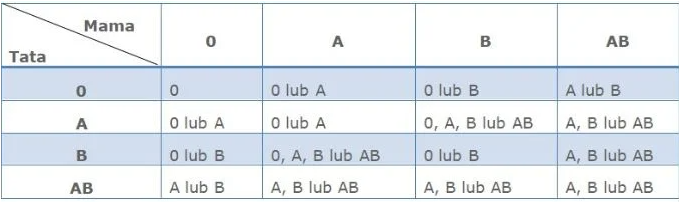
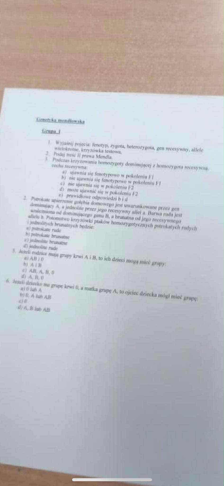
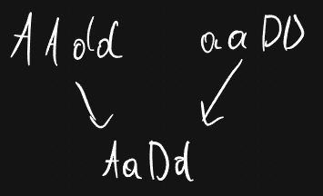
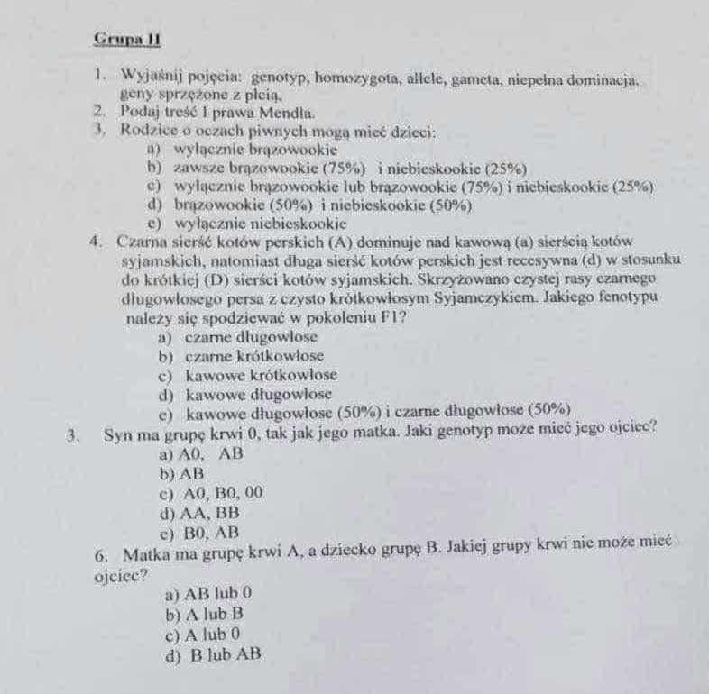
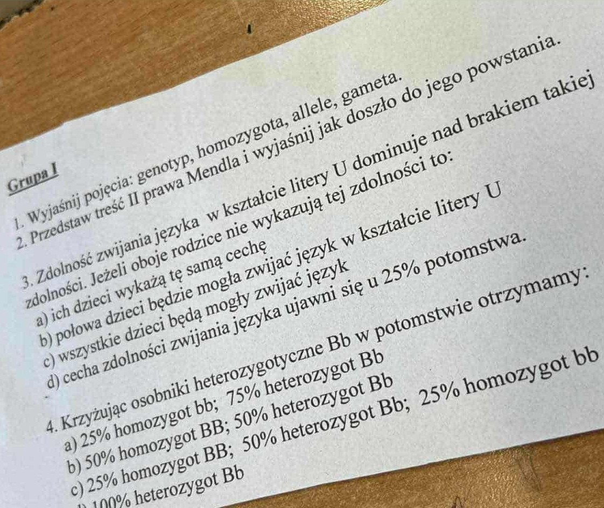
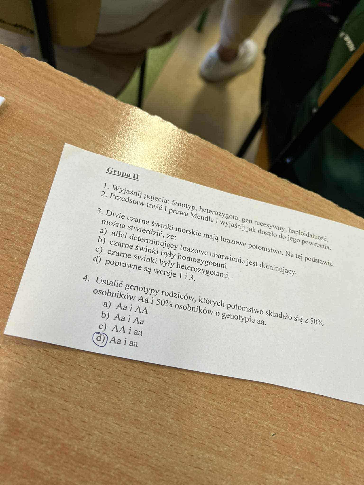

Sprawdzian do praw Mendla od Dawida
Te dłuższe
Grupa I
1. Wyjaśnij pojęcia
- Fenotyp - Widoczne cechy organizmu np. kształt nosa, barwa włosów; cechy fizjologiczne i biochemiczne
- Zygota - Zygota to pierwsza komórka nowego organizmu, która powstaje w wyniku połączenia komórki jajowej (od matki) i plemnika (od ojca). To tak, jakby były to "pierwsze cegiełki" nowego życia, które zawiera kompletny zestaw informacji genetycznej od obojga rodziców.
- Heterozygota - 2 różne allele (małe a, duże A) - cecha dominująca
- Gen recesywny - Gen recesywny to taka wersja genu, której cecha ujawnia się tylko wtedy, gdy organizm odziedziczy dwie takie same kopie tego genu – jedną od matki i jedną od ojca. Jeśli obecna jest dominująca wersja genu, to ona "wygrywa" i cecha recesywna pozostaje ukryta
- Allele wielokrotne - Allele wielokrotne to sytuacja, w której dla jednej cechy istnieje więcej niż dwie możliwe wersje genu (allele) w populacji.
- Krzyżówka testowa - Krzyżówka testowa to eksperyment hodowlany, w którym krzyżuje się organizm o nieznanym genotypie (szczególnie jeśli wykazuje cechę dominującą) z organizmem, który jest homozygotą recesywną (czyli ma dwie kopie genu recesywnego). Dzięki temu można sprawdzić, czy nieznany organizm posiada ukryty gen recesywny.
2. Podaj treść II Prawa Mendla
II prawo Mendla - jest to prawo niezależnie dziedziczonych cech. Geny nie są zależne od dziedziczenia przez drugą parę. W gametach heterozygotyczne allele należące do różnych par spotykają się przypadkowo z jednakową częstością. Drugie prawo Mendla, czyli prawo niezależnej segregacji, powstało na podstawie eksperymentów z krzyżowaniem dihybrydowym przeprowadzonych przez Gregora Mendla na grochu.
3. Podczas skrzyżowania homozygoty dominującej z homozygotą recesywną, cecha recesywna
- Ujawnia się fenotypowo w pokoleniu F1
- Nie ujawnia się fenotypowo w pokoleniu F1
- Nie ujawnia się w pokoleniu F2
- Może ujawnić się w pokoleniu F2
- Prawidłowe odpowiedzi - 2 i 4 (b i d)
4. Pstrokate upierzenie gołębia domowego jest uwarunkowane przez gen dominujący "A", a jednolite przez jego recesywny allel "a". Barwa ruda jest uzależniona od dominującego genu "B", a brunatna od jego recesywnego allelu "b". Potomstwo krzyżówki ptaków homozygotycznych pstrokatych rudych i jednolitych brunatnych będzie:
- Pstrokate rude
- Pstrokate brunatne
- Jednolite brunatne
- Jednolite rude
5. Jeżeli rodzice mają grupę krwi A i B, to ich dzieci mogą mieć grupy:
- AB i 0
- A i B
- AB, A, B, 0
- A, B, 0
Odpowiedź
- Rodzic z grupą krwi A może mieć genotyp AA lub A0
- Rodzic z grupą krwi B może mieć genotyp BB lub B0

Poprawna odpowiedź to: AB, A, B, 0
6. Jeżeli dziecko ma grupę krwi 0 a matka grupę A to ojciec dziecka mógł mieć grupę:
- 0 lub A
- B, A lub AB
- 0
- A, B lub AB
Odpowiedź
- Dziecko ma genotyp 00
- Matka z grupą A musi mieć genotyp A0 (nie AA), ponieważ przekazała dziecku allel 0
- Ojciec również musiał przekazać allel 0, więc musi posiadać co najmniej jeden taki allel w swoim genotypie
Poprawna odpowiedź to: 0 lub A

Grupa II
1. Wyjaśnij pojęcia:
- Genotyp - to są wszystkie geny organizmu
- Homozygota
- Homozygota dominująca - 2 allele dominujące (duże A) - cecha dominująca
- Homozygota recesywna - 2 allele recesywne (małe a) - cecha recesywna
- Allele - Geny występujące w wielu wersjach. Przykładowo gen warunkujący kolor kwiatów grochu może występować w postaci allelu barwy czerwonej oraz allelu barwy białej
- Gameta - Komórka rozrodcza (płciowa) zawierająca pojedynczy zestaw chromosomów (haploidalna)
- Niepełna dominacja - Zjawisko, w którym żaden z alleli nie dominuje całkowicie, w wyniku czego heterozygota wykazuje fenotyp pośredni między obydwoma homozygotami
- Geny sprzężone z płcią - Geny, które są powiązane z płcią, znajdujące się na chromosomach płciowych (X lub Y)
2. Podaj treść I prawa Mendla
W gametach allele tej samej pary wzajemnie się wykluczają i występują zawsze pojedynczo. W czasie powstawania gamet ma miejsce mejoza (podział), który sprawia, że do gamety trafia po jednym genie na każdą cechę. Gamety są haploidalne (pojedynczy zestaw chromosomów) (1n) natomiast organizmy są diploidalne (podwójny zestaw chromosomów) mają (2n)
3. Rodzice o oczach piwnych mogą mieć dzieci:
- wyłącznie brązowookie
- zawsze brązowookie (75%) i niebieskookie (25%)
- wyłącznie brązowookie lub brązowookie i niebieskookie (25%)
- brązowookie (50%) i niebieskookie (50%)
- wyłącznie niebieskookie
Odpowiedź
Scenariusz 1: Jeśli przynajmniej jeden rodzic ma genotyp AA (homozygota dominująca), wszystkie dzieci będą miały wyłącznie brązowe oczy, ponieważ każde dziecko otrzyma przynajmniej jeden allel dominujący A.
Scenariusz 2: Jeśli oboje rodzice są heterozygotami (Aa x Aa), wtedy zgodnie z krzyżówką mendlowską możliwe są następujące kombinacje:
- AA (25%) - brązowe oczy
- Aa (50%) - brązowe oczy
- aa (25%) - niebieskie oczy
Poprawna odpowiedź to: wyłącznie brązowookie lub brązowookie i niebieskookie (25%)
4. Czarna sierść kotów perskich (A) dominuje nad kawową (a) sierścią kotów syjamskich, natomiast długa sierść kotów perskich jest recesywna (d) w stosunku do krótkiej (D) sierści kotów syjamskich. Skrzyżowano czystej rasy czarnego długowłosego persa z czysto krótkowłosym Syjamczykiem. Jakiego fenotypu należy się spodziewać w pokoleniu F1?
- czarne długowłose
- czarne krótkowłose
- kawowe krótkowłose
- kawowe długowłose
- kawowe długowłose (50%) i czarne długowłose (50%)
Odpowiedź
A - czarna sierść
a - kawowa sierść
D - krótka sierść
d - długa sierść
Czysta rasa czarny długowłosy - AAdd
Czysta krótkowłosa Syjamczyk - aaDD

Poprawna odpowiedź to: czarne krótkowłose
5. Syn ma grupę krwi 0, tak jak jego matka. Jaki genotyp może mieć jego ojciec?
- A0, AB
- AB
- A0, B0, 00
- AA, BB
- B0, AB
Odpowiedź
Analiza genetyczna
Aby zrozumieć tę sytuację, trzeba przeanalizować genotypy wszystkich osób:
- Syn z grupą 0 - ma genotyp 00 (dwa allele recesywne)
- Matka z grupą 0 - ma genotyp 00 (może przekazać tylko allel 0)
- Ojciec - musi mieć co najmniej jeden allel 0, aby przekazać go synowi
Możliwe genotypy ojca
Ponieważ dziecko otrzymało allel 0 od matki i musi otrzymać drugi allel 0 od ojca, ojciec musi posiadać allel recesywny 0 w swoim genotypie. Oznacza to, że ojciec może mieć:
- Genotyp 00 - grupa krwi 0
- Genotyp A0 - grupa krwi A (heterozygota)
- Genotyp B0 - grupa krwi B (heterozygota)
Wykluczone genotypy
Ojciec nie może mieć genotypów:
- AA - brak allelu 0 do przekazania
- BB - brak allelu 0 do przekazania
- AB - brak allelu 0 do przekazania
Prawidłowa odpowiedź to trzecia opcja: A0, B0, 00 - wszystkie te genotypy zawierają allel recesywny 0, który mógł zostać przekazany dziecku.
Poprawna odpowiedź to: A0, B0, 00
6. Matka ma grupę krwi A, a dziecko grupę B. Jakiej grupy krwi nie może mieć ojciec?
- AB lub 0
- A lub B
- A lub 0
- B lub AB

Te krótsze
Grupa I
Zad 1
- Genotyp - Wszystkie geny organizmu
- Homozygota - Jest to para alleli, która składa się z dwóch alleli tego samego genu. Istnieją dwa rodzaje homozygot: dominująca oraz recesywna
- Allele - Allele to jedna z różnych form tego samego genu, które zajmują identyczne miejsce w chromosomach homologicznych. Allele determinują konkretne cechy organizmu, na przykład mogą decydować o kolorze oczu czy grupie krwi.
- Gameta - Gameta to haploidalna komórka płciowa (plemnik lub komórka jajowa) niosąca tylko jeden allel z każdej pary alleli, co jest kluczowe dla pierwszego prawa Mendla zwanego prawem czystości gamet.
Zad 2
II prawo Mendla - jest to prawo niezależnie dziedziczonych cech. Geny nie są zależne od dziedziczenia przez drugą parę. W gametach heterozygotyczne allele należące do różnych par spotykają się przypadkowo z jednakową częstością. Drugie prawo Mendla, czyli prawo niezależnej segregacji, powstało na podstawie eksperymentów z krzyżowaniem dihybrydowym przeprowadzonych przez Gregora Mendla na grochu.
Zad 3
Zdolność zwijania języka w kształcie litery U dominuje nad brakiem takiej zdolności. Jeżeli oboje rodzice nie wykazują tej zdolności to:
- ich dzieci wykażą tą samą cechę
- połowa dzieci będzie mogła zawijać język w kształcie litery U
- Wszystkie dzieci będą mogły zawijać język
- cecha zdolności zwijania języka ujawni się u 25% potomstwa
Odpowiedź
D - zawijanie języka
d - brak zawijania języka
Wniosek: ich dzieci wykażą tą samą cechę
Zad 4
Krzyżując osobniki heterozygotyczne Bb w potomstwie otrzymamy:
- 25% homozygotyczny bb; 75% heterozygotyczny: Bb
- 50% homozygot: BB 50% heterozygot: Bb
- 25% homozygot BB; 50% heterozygot Bb; 25% homozygota bb
- 100% heterozygot Bb
Odpowiedź

Grupa II
1. Wyjaśnij pojęcia
- Fenotyp - Zespół cech, które ujawniają się z genotypu pod wpływem środowiska
- Heterozygota - Heterozygota to organizm lub komórka diploidalna, która ma dwa różne allele tego samego genu w odpowiadających sobie loci chromosomów homologicznych, np. genotyp 'Aa'
- Gen recesywny - Gdy istnieją 2 allele (dwie wersje) danego genu, jeden z nich jest często Dominujący a drugi Recesywny. Do ujawnienia się cechy warunkowanej przez allel dominujący, czyli cechy dominującej wystarczy jeden allel dominujący. Cecha warunkowana przez allel recesywny - cecha recesywna ujawnia się tylko w obecności dwóch alleli recesywnych
- Haploidalność - Haploidalność to stan, w którym komórka lub organizm ma pojedynczy zestaw chromosomów, oznaczany jako 'n', zamiast par chromosomów jak u organizmów diploidalnych '2n'
2. Przedstaw treść I prawa Mendla i wyjaśnij jak doszło do jego powstania
Pierwsze Prawo Mendla, znane również jako Prawo Segregacji, stanowi, że każda para alleli rozdziela się podczas tworzenia gamet, tak że każda gameta otrzymuje tylko jeden allel z danej pary, a po zapłodnieniu allele łączą się losowo, tworząc nowy zestaw genotypów u potomstwa. Gregor Mendel sformułował to prawo na podstawie swoich eksperymentów z grochem zwyczajnym w połowie XIX wieku. Obserwując dziedziczenie cech takich jak kolor nasion przez kolejne pokolenia (P, F1, F2), zauważył zjawisko dominacji i recesywności oraz przewidywalne proporcje cech w potomstwie, co doprowadziło go do wniosku o segregacji (rozdzielaniu się) czynników dziedziczenia podczas tworzenia gamet.
3. Dwie czarne świnki morskie mają brązowe potomstwo. Na tej podstawie można stwierdzić, że
- Allel determinujący brązowe ubarwienie jest dominujący
- Czarne świnki były homozygotami
- Czarne świnki były heterozygotami
- Poprawne są wersje 1 i 3
4. Ustalić genotypy rodziców, których potomstwo składało się z 50% osobników "Aa" i 50% osobników o genotypie "aa"
- Aa i AA
- Aa i Aa
- AA i aa
- Aa i aa
